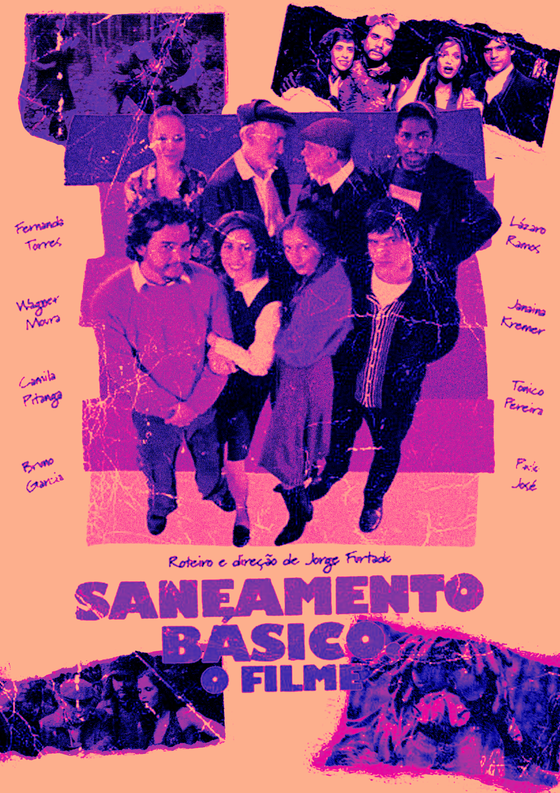
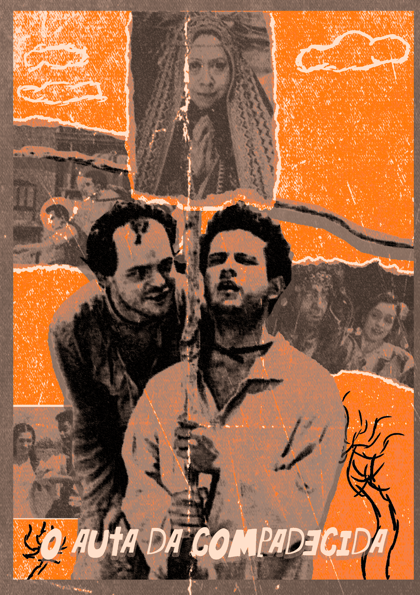
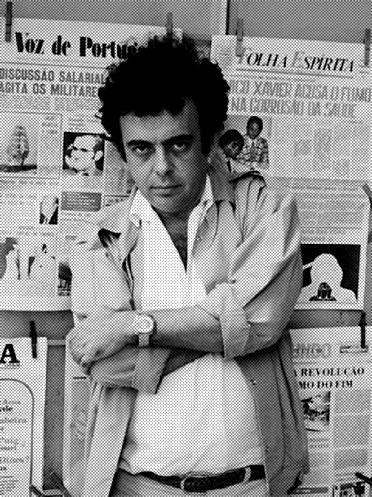

2002
CIDADE DE DEUS
Fernando Meirelles
01 — CINEMA BRASILEIRO
O cinema brasileiro construiu, ao longo de décadas, uma identidade marcada por diferentes culturas, conflitos sociais, paisagens e formas de contar histórias.
EXPLORAR →Desde as primeiras experiências cinematográficas realizadas no final do século XIX, o cinema brasileiro passou por diferentes fases e movimentos.
A produção nacional ganhou destaque com períodos como a Chanchada, o Cinema Novo e o Cinema Marginal, além de importantes produções contemporâneas.
Mais do que entretenimento, o cinema também se tornou uma maneira de observar e questionar a sociedade brasileira.
Fernando Meirelles
Walter Salles
José Padilha

Jorge Furtado
Anselmo Duarte

Guel Arraes
Kleber Mendonça Filho
Hector Babenco
Walter Salles

Um dos principais nomes do Cinema Novo, conhecido por uma linguagem cinematográfica marcada pela crítica social e política.
Diretor associado a importantes filmes do cinema brasileiro contemporâneo.
Diretor conhecido internacionalmente por produções como Cidade de Deus.
A fotografia cinematográfica é responsável por construir atmosferas, transmitir emoções e orientar o olhar do espectador.
Luz, sombra, enquadramento, cor e composição ajudam a transformar cada cena em uma imagem que também conta uma história.